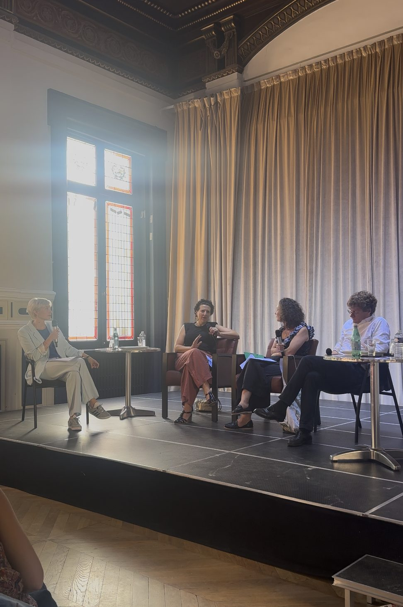
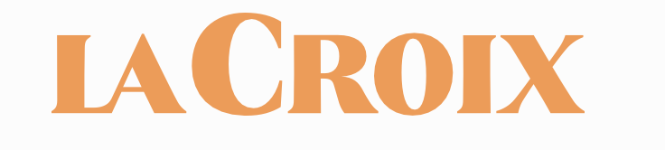
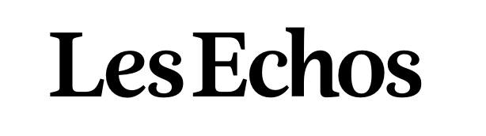

Nos actions
Porter le deuil périnatal dans l'espace public.
Créer

Album jeunesse dès 4 ans
Découvrir le livre →
Faire évoluer
« Un frère dont l'école n'a jamais entendu le nom. »
Tribune de presse
Lire la tribune →
Rassembler

Discussion avec 3 spécialistes
Découvrir la table ronde →
Faire évoluer
« Il lui reste le geste symétrique, pour ceux
qui repartent sans. »

qui repartent sans. »
Tribune de presse
Lire la tribune →
Informer

Cartographie du deuil périnatal
Découvrir le compte Instagram →
Comprendre
In/Visibles
Le deuil périnatal,
angle mort de
l'édition jeunesse Anatomie d'une asymétrie,
et leviers pour la corriger.
angle mort de
l'édition jeunesse Anatomie d'une asymétrie,
et leviers pour la corriger.
Note d'analyse
Lire la note →
Faire évoluer
« Un marché que tous les autres ont mal évalué. »
Soutenir

Tribune de presse
Lire la tribune →
Rendre/Visibles
Contacter l'association
Nous écrire →